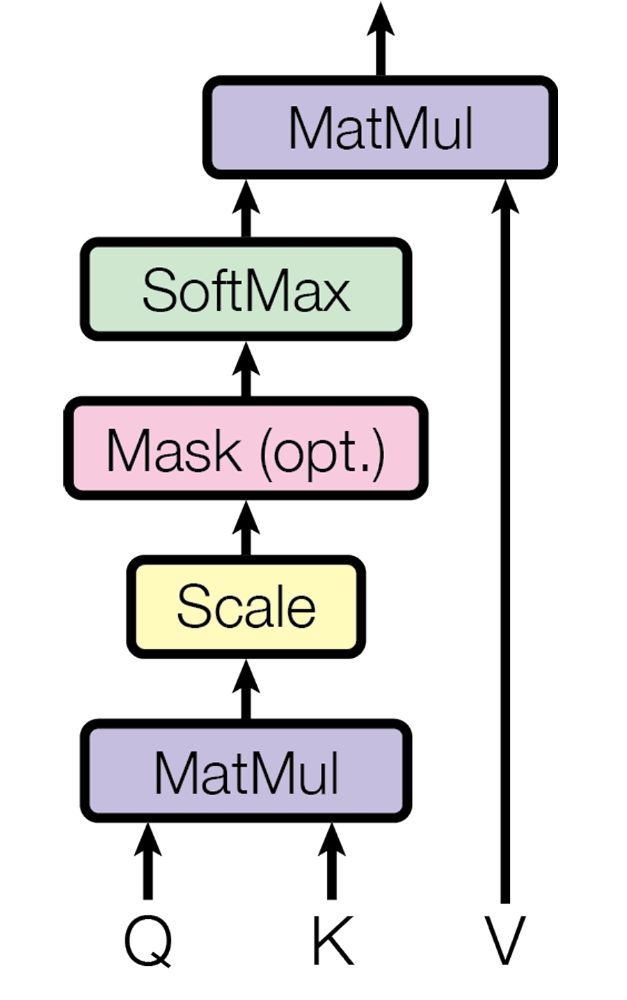
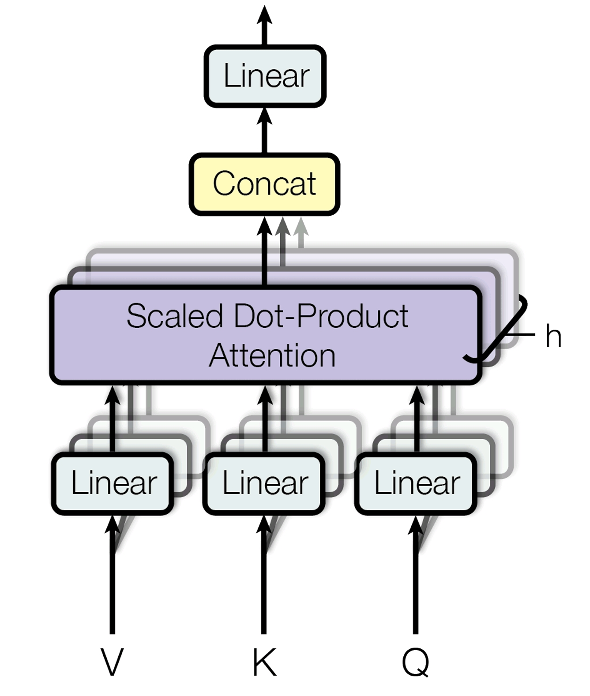
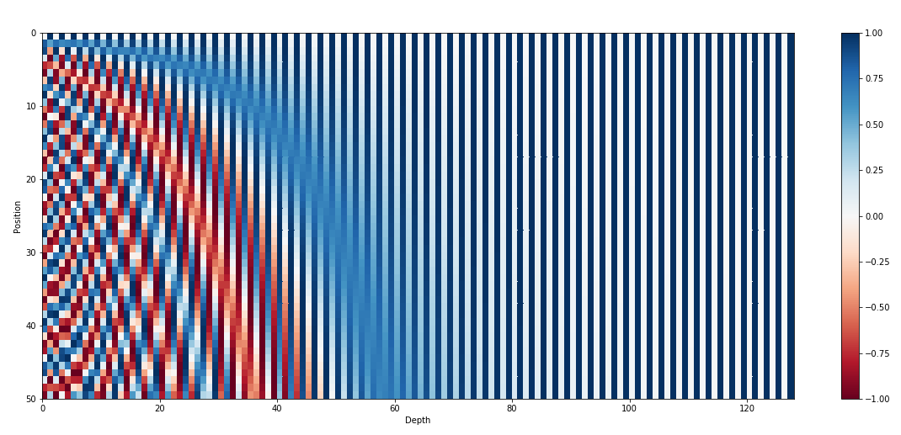
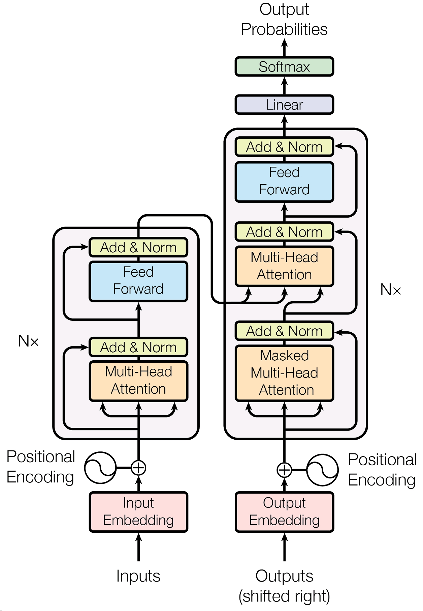
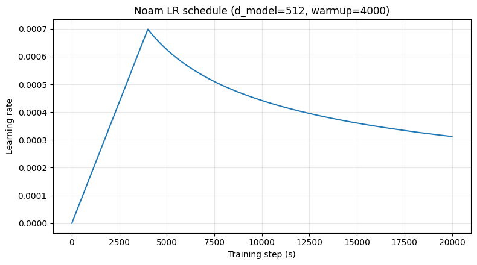
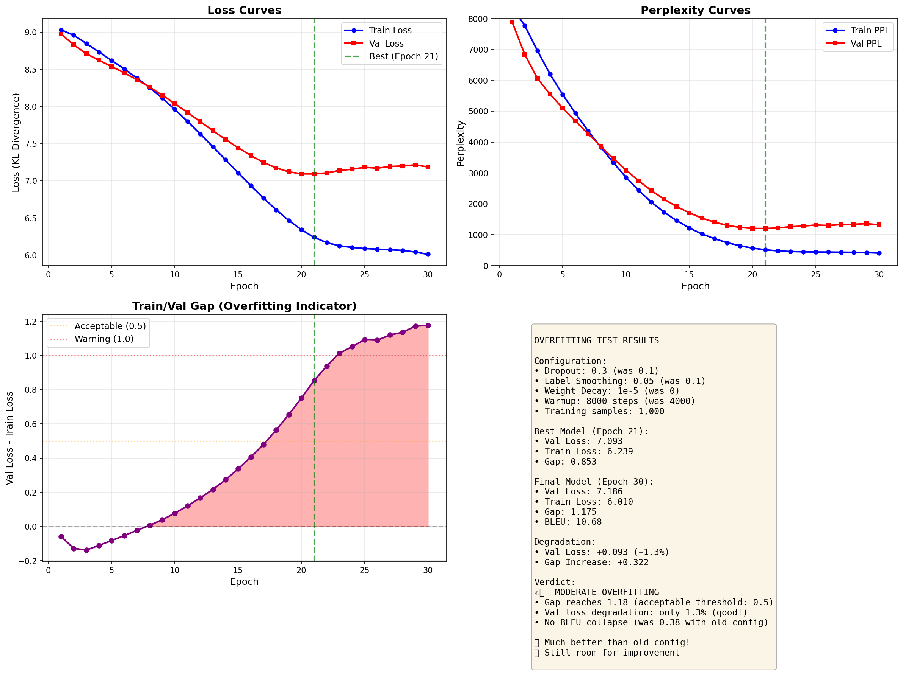
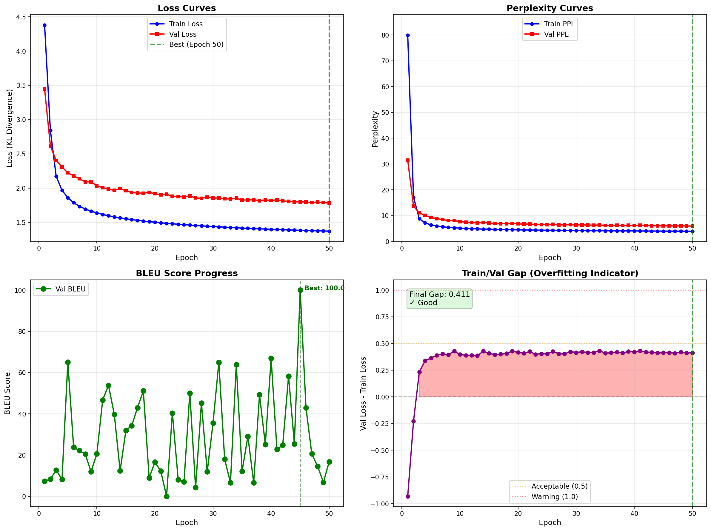
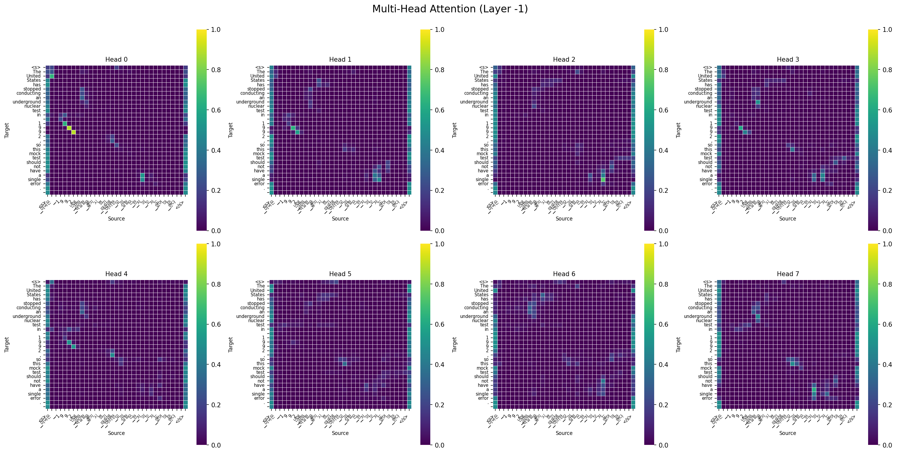

5. Transformer¶
Papers¶
Blogs¶
- https://jalammar.github.io/illustrated-transformer/
- https://kazemnejad.com/blog/transformer_architecture_positional_encoding/
- https://nlp.seas.harvard.edu/annotated-transformer/
Core Components¶
Scaled Dot-Product Attention¶
The self-attention layer computes the relation between each pair of words in two sequences, and outputs the weighted average of the vectors according to the calculated attention.
Definition 5.1 : Scaled Dot-Product Attention
-
Input Queries from \(S_1\) :
From the first sequence \(S_1\), query vectors for each word are given as input.\[ q_1, q_2, \dots, q_{|S_1|} \in \mathbb{R}^{d_k}. \] -
Input Key-Value pairs from \(S_2\) :
From the second sequence \(S_2\), key-value vector pairs for each word are given as input.\[ k_1, k_2, \dots, k_{|S_2|} \in \mathbb{R}^{d_k}. \]\[ v_1, v_2, \dots, v_{|S_2|} \in \mathbb{R}^{d_v}. \] -
Score (relation) of word \(S_{1, i}\) and \(S_{2, j}\) :
For each \(1 \le i \le |S_1|\), \(1 \le j \le |S_2|\), we compute the dot-product attention as the dot product between the query vector \(q_i\) and key vector \(k_j\). This value represents the score (relation) of word \(S_{1, i}\) and \(S_{2, j}\).\[ s(i, j) = q_i \cdot k_j. \] -
Masking (Optional) :
If we want to ignore the relation between specific pair of words, we can apply masking by zeroing out the softmax probability with explicitly setting\[ s(i, j) = -\infty. \]This technique is used in Defintion 5.8.
-
Output :
For each fixed \(i\), define the score vector over all positions in \(S_2\):\[ s_i = \big(s(i,1), s(i,2), \dots, s(i,|S_2|)\big) \in \mathbb{R}^{|S_2|}. \]We scale by \(\sqrt{d_k}\) and take softmax to get attention weights:
\[ \alpha_{i,j} = \frac{\exp\!\left(\frac{s(i,j)}{\sqrt{d_k}}\right)} {\sum_{t=1}^{|S_2|}\exp\!\left(\frac{s(i,t)}{\sqrt{d_k}}\right)} \qquad (1 \le j \le |S_2|). \]Then the output (context) vector for token \(S_{1,i}\) is the weighted average of the values:
\[ o_i = \sum_{j=1}^{|S_2|} \alpha_{i,j}\, v_j \in \mathbb{R}^{d_v}. \]Collecting all outputs gives:
\[ o_1, o_2, \dots, o_{|S_1|} \in \mathbb{R}^{d_v}. \] -
Matrix form :
Define the stacked matrices by putting the vectors as rows:\[ Q = \begin{bmatrix} q_1^\top \\ q_2^\top \\ \vdots \\ q_{|S_1|}^\top \end{bmatrix} \in \mathbb{R}^{|S_1|\times d_k}, \qquad K = \begin{bmatrix} k_1^\top \\ k_2^\top \\ \vdots \\ k_{|S_2|}^\top \end{bmatrix} \in \mathbb{R}^{|S_2|\times d_k}, \qquad V = \begin{bmatrix} v_1^\top \\ v_2^\top \\ \vdots \\ v_{|S_2|}^\top \end{bmatrix} \in \mathbb{R}^{|S_2|\times d_v}. \]\[ \mathrm{Attention}(Q,K,V) = \mathrm{softmax}\!\left(\frac{QK^\top}{\sqrt{d_k}}\right)V = \begin{bmatrix} o_1^\top \\ o_2^\top \\ \vdots \\ o_{|S_1|}^\top \end{bmatrix} \in \mathbb{R}^{|S_1|\times d_v}. \]
Among the commonly used additive attention and dot-product (multiplicative) attention, the paper chose dot-product attention, with a scaling factor of \(\frac{1}{\sqrt{d_k}}\). The scaling factor was introduced to normalize the dot-product, which grows bigger for larger values of \(d_k\), which will push the softmax function into regions where the gradients vanish. (Modeling the components of \(q_i\) and \(k_j\) as i.i.d. random variables of mean \(0\) and variance \(1\) gives \(s(i, j) = q_i \cdot k_j\) variance of \(d_k\), so we have to normalize by the scaling factor of \(\frac{1}{\sqrt{d_k}}\).)

Figure 5.1 : Scaled dot-product attention.
Multi-Head Attention¶
Instead of using just one attention, we project the query, key, value vectors to \(h\) multiple heads and perform attention function on each of them in parallel. The results of each heads are concatenated and projected again for the final values.
Definition 5.2 : Multi-Head Attention
-
Input :
Query, Key, Values of each words are given as vectors of dimension \(d_{\mathrm{model}}\).\[ Q \in \mathbb{R}^{|S_1|\times d_{\mathrm{model}}}, \quad K \in \mathbb{R}^{|S_2|\times d_{\mathrm{model}}}, \quad V \in \mathbb{R}^{|S_2|\times d_{\mathrm{model}}}. \] -
For each heads, \(Q, K, V\) are projected to dimensions \(d_k, d_k, d_v\) by learned linear projections \(W_i^Q, W_i^K, W_i^V\). Then, the attention function is computed for each projected queries, keys, values.
\[ W_i^Q \in \mathbb{R}^{d_{\mathrm{model}} \times d_k}, \quad W_i^K \in \mathbb{R}^{d_{\mathrm{model}} \times d_k}, \quad W_i^V \in \mathbb{R}^{d_{\mathrm{model}} \times d_v}. \]\[ \mathrm{head}_i = \mathrm{Attention}(QW_i^Q, KW_i^K, VW_i^V) \in \mathbb{R}^{|S_1| \times d_v}. \] -
Output :
For each words, the results \(\mathrm{head}_i\) are concatenated, and projected again to output a vector of dimension \(d_{\mathrm{model}}\) by learned projection \(W^O\). (Concatenation is same as summing up the projected vectors for each heads.)\[ W^O \in \mathbb{R}^{hd_v \times d_{\mathrm{model}}}. \]\[ \mathrm{MultiHead}(Q, K, V) = \mathrm{Concat}(\mathrm{head}_1, \dots, \mathrm{head}_h) W^O \in \mathbb{R}^{|S_1| \times d_{\mathrm{model}}}. \]

Figure 5.2 : Multi-head attention.
Position-wise Feed-Forward Network¶
While the attention layer captures the relation between subsets of words, the feed-forward network layer tries to learn the meaning of the word phrases.
Definition 5.3 : Position-wise Feed-Forward Network
-
Input :
Representation of each words are given as vectors of dimension \(d_{\mathrm{model}}\).\[ x \in \mathbb{R}^{|S|\times d_{\mathrm{model}}}. \] -
Output :
Each vector passes through two linear transformations with a ReLU activation in between. Note that each words are passed through the feed-forward network independently.\[ W_1 \in \mathbb{R}^{d_{\mathrm{model}} \times d_{ff}}, \quad b_1 \in \mathbb{R}^{d_{ff}}, \quad W_2 \in \mathbb{R}^{d_{ff} \times d_{\mathrm{model}}}, \quad b_2 \in \mathbb{R}^{d_{\mathrm{model}}}. \]\[ \mathrm{FFN}(x) = \max(0, xW_1+b_1)W_2+b_2 \in \mathbb{R}^{|S| \times d_{\mathrm{model}}}. \]
Positional Encoding¶
The transformer model can not utilize the order of words, since it does not have any recurrence or convolution. Positional encoding is added to the input embeddings at the beginning to give the model information about the order.
Definition 5.4 : Positional Encoding
Each dimension of the positional encoding along \(d_{\mathrm{model}}\) corresponds to a sinusoid, with the wavelengths forming a geometric progression from \(2\pi\) to \(10000 \cdot 2\pi\).

Figure 5.3 : Visualization of sinusoid positional encoding.
Concept 5.5 : Intuitions behind Choice of Positional Encoding Function
-
The binary representation of positions gives us a discrete (0/1) version of a positional encoding function: each bit is a separate “channel” that flips at its own rate. The least-significant bit changes every step (period 2), the next bit changes every two steps (period 4), then every four steps (period 8), and so on.
\[ \begin{align} 0: \ \ \ \ \color{orange}{\texttt{0}} \ \ \color{green}{\texttt{0}} \ \ \color{blue}{\texttt{0}} \ \ \color{red}{\texttt{0}} & & 8: \ \ \ \ \color{orange}{\texttt{1}} \ \ \color{green}{\texttt{0}} \ \ \color{blue}{\texttt{0}} \ \ \color{red}{\texttt{0}} \\ 1: \ \ \ \ \color{orange}{\texttt{0}} \ \ \color{green}{\texttt{0}} \ \ \color{blue}{\texttt{0}} \ \ \color{red}{\texttt{1}} & & 9: \ \ \ \ \color{orange}{\texttt{1}} \ \ \color{green}{\texttt{0}} \ \ \color{blue}{\texttt{0}} \ \ \color{red}{\texttt{1}} \\ 2: \ \ \ \ \color{orange}{\texttt{0}} \ \ \color{green}{\texttt{0}} \ \ \color{blue}{\texttt{1}} \ \ \color{red}{\texttt{0}} & & 10: \ \ \ \ \color{orange}{\texttt{1}} \ \ \color{green}{\texttt{0}} \ \ \color{blue}{\texttt{1}} \ \ \color{red}{\texttt{0}} \\ 3: \ \ \ \ \color{orange}{\texttt{0}} \ \ \color{green}{\texttt{0}} \ \ \color{blue}{\texttt{1}} \ \ \color{red}{\texttt{1}} & & 11: \ \ \ \ \color{orange}{\texttt{1}} \ \ \color{green}{\texttt{0}} \ \ \color{blue}{\texttt{1}} \ \ \color{red}{\texttt{1}} \\ 4: \ \ \ \ \color{orange}{\texttt{0}} \ \ \color{green}{\texttt{1}} \ \ \color{blue}{\texttt{0}} \ \ \color{red}{\texttt{0}} & & 12: \ \ \ \ \color{orange}{\texttt{1}} \ \ \color{green}{\texttt{1}} \ \ \color{blue}{\texttt{0}} \ \ \color{red}{\texttt{0}} \\ 5: \ \ \ \ \color{orange}{\texttt{0}} \ \ \color{green}{\texttt{1}} \ \ \color{blue}{\texttt{0}} \ \ \color{red}{\texttt{1}} & & 13: \ \ \ \ \color{orange}{\texttt{1}} \ \ \color{green}{\texttt{1}} \ \ \color{blue}{\texttt{0}} \ \ \color{red}{\texttt{1}} \\ 6: \ \ \ \ \color{orange}{\texttt{0}} \ \ \color{green}{\texttt{1}} \ \ \color{blue}{\texttt{1}} \ \ \color{red}{\texttt{0}} & & 14: \ \ \ \ \color{orange}{\texttt{1}} \ \ \color{green}{\texttt{1}} \ \ \color{blue}{\texttt{1}} \ \ \color{red}{\texttt{0}} \\ 7: \ \ \ \ \color{orange}{\texttt{0}} \ \ \color{green}{\texttt{1}} \ \ \color{blue}{\texttt{1}} \ \ \color{red}{\texttt{1}} & & 15: \ \ \ \ \color{orange}{\texttt{1}} \ \ \color{green}{\texttt{1}} \ \ \color{blue}{\texttt{1}} \ \ \color{red}{\texttt{1}} \\ \end{align} \]Sinusoidal positional encoding is the continuous, float-friendly analogue of the same idea, smooth sine/cosine waves with wavelengths (periods) increasing exponentially.
-
The sinusoidal positional encoding has a good representation of relative positions, \(\mathrm{PE}_{pos+\phi}\) can be expressed as a linear transformation (rotation) of \(\mathrm{PE}_{pos}\), for fixed \(\phi\) regardless of choice of \(pos\).
\[ M_{\phi} \cdot \begin{bmatrix} \sin(\omega_i \cdot t) \\ \cos(\omega_i \cdot t) \end{bmatrix} = \begin{bmatrix} \sin(\omega_i \cdot (t + \phi)) \\ \cos(\omega_i \cdot (t + \phi)) \end{bmatrix}. \]
Model Structure¶

Figure 5.4 : Transformer model architecture.
Definition 5.6 : Residual Connection + Layer Normalization
For each sub-layers in both encoder and decoder, we cover each of them with residual connection followed by layer normalization.
LayerNorm is applied independently to each row, normalizing across the dimension \(d_{\mathrm{model}}\).
Encoder¶
The encoder takes the source sentence \(S\) as input, and aims to transform the sentence into sequence of vectors which captures the meaning of the sentence.
Definition 5.7 : Encoder Layer
Each layer of the encoder is consisted of two sub-layers. Both of them are covered with residual connection + layer normalization (Definition 5.6).
-
Self-Attention Sublayer :
In the self-attention sublayer, all key, values, queries all come from the same place, the output of previous layer in the encoder. No masking is applied, so all positions can attend to each position in the previous layer of the encoder. -
Feed-Forward Net Sublayer :
The result of attention is passed to feed-forward net sublayer.
Concept 5.8 : Encoder
- Input : The source sentence \(S_1, S_2, \dots, S_{|S|}\) is given as input.
-
First, after the source sentence \(S\) is embedded into vectors of size \(\mathbb{R}^{|S| \times d_{\mathrm{model}}}\), positional encoding is added:
\[ X^{(0)} = \mathrm{Embed}(S) + \mathrm{PE}(S) \in \mathbb{R}^{|S| \times d_{\mathrm{model}}}. \]Then, it passes through \(N\) identical encoder layers (Definition 5.7), where the parameters are kept independent for each layer:
\[ X^{(\ell)} = \mathrm{EncLayer}^{(\ell)}\!\left(X^{(\ell-1)}\right) \in \mathbb{R}^{|S| \times d_{\mathrm{model}}} \qquad (\ell = 1,2,\dots,N). \] -
Output :
The encoder outputs the final sequence of hidden states\[ Z = X^{(N)} = \bigl(z_1, z_2, \dots, z_{|S|}\bigr)^\top \in \mathbb{R}^{|S| \times d_{\mathrm{model}}}. \]Each \(z_i \in \mathbb{R}^{d_{\mathrm{model}}}\) is a contextual representation of the source token \(S_i\) that incorporates information from all source positions via self-attention. In the decoder, \(Z\) is used as the key-value memory for encoder–decoder attention (cross-attention).
Decoder¶
The decoder takes the target sentence \(T\) as input, and for each position \(i\) outputs the probability distribution of the next token that will appear after \(T_1, T_2, \dots, T_{i-1}\). In inference, the probability distribution is used to generate the next token. In training, we are particularly interested in the conditional probability that the next target token \(T_i\) will appear next.
In order to assure that the output at position \(i\) only depends on the words with position less than \(i\), the decoder uses shifted inputs and causal masking in self-attention.
Definition 5.9 : Decoder Layer
Each layer of the decoder is consisted of three sub-layers. All of them are covered with residual connection + layer normalization (Definition 5.6).
-
Self-Attention Sublayer :
In the self-attention sublayer, all key, values, queries all come from the same place, the output of previous layer in the decoder. Here, casual masking is applied so that words on the left cannot get information from the words on the right. (In terms of prediction, at the time when the left word is generated, the model does not know the words appearing right of it. Therefore, we block out the illegal "cheating" connections.)\[ \mathrm{MaskedAttn}(Q,K,V) = \mathrm{softmax}\!\left(\frac{QK^\top}{\sqrt{d_k}} + M\right)V, \quad M_{i,j}= \begin{cases} 0, & j \le i,\\ -\infty, & j> i. \end{cases} \] -
Cross-Attention Sublayer :
In the cross-attention sublayer, key-value pairs come from the final result of encoder, while the queries come from the result of self-attention sublayer. No masking is applied, so all positions can attend to each position in the encoder. -
Feed-Forward Net Sublayer :
The result of attention is passed to feed-forward net sublayer.
Concept 5.10 : Decoder
-
Input :
The target tokens \(T_1, T_2, \dots, T_{|T|}\) are used to form the decoder input by shifting right by one position:\[ T^{\text{in}} = \langle \mathrm{BOS}\rangle,\, T_1,\, T_2,\, \dots,\, T_{|T|-1}. \] -
First, the decoder input is embedded and positional encoding is added:
\[ Y^{(0)} = \mathrm{Embed}(T^{\text{in}}) + \mathrm{PE}(T^{\text{in}}) \in \mathbb{R}^{|T|\times d_{\mathrm{model}}}. \]Pass through \(N\) identical decoder layers (Definition 5.9), with independent parameters per layer:
\[ Y^{(\ell)} = \mathrm{DecLayer}^{(\ell)}\!\left(Y^{(\ell-1)},\, Z\right) \in \mathbb{R}^{|T|\times d_{\mathrm{model}}} \qquad (\ell = 1,2,\dots,N), \]where \(Z \in \mathbb{R}^{|S|\times d_{\mathrm{model}}}\) is the encoder output (source “memory”).
-
Output logits and probabilities :
The final decoder outputs are\[ Y^{(N)} = \bigl(y_1, y_2, \dots, y_{|T|}\bigr)^\top \in \mathbb{R}^{|T|\times d_{\mathrm{model}}}. \]For each position \(i\), let \(y_i \in \mathbb{R}^{d_{\mathrm{model}}}\) be the \(i\)-th row of \(Y^{(N)}\). A linear projection to the vocabulary size \(d_{\mathrm{target\_vocab}}\) produces logits, and softmax gives the distribution \(p_i \in \mathbb{R}^{d_{\mathrm{target\_vocab}}}\).
\[ P = \bigl(p_1, p_2, \dots, p_{|T|}\bigr)^\top \in \mathbb{R}^{|T|\times d_{\mathrm{target\_vocab}}}. \]From the distribution \(p_i\), we take the probability of token \(T_i\) to compute \(\Pr(T_i \mid S, T_1, T_2, \dots, T_{i-1})\). Thus, we want to maximize the probabilities matching \(T^{\text{out}}\), where
\[ T^{\text{out}} = T_1,\, T_2,\, \dots,\, T_{|T|-1}, \langle \mathrm{EOS}\rangle = T_{|T|}. \]
Concept 5.11 : Shared Embeddings and Pre-Softmax Linear Transformation
For both the encoder and decoder, we use learned embeddings to convert the input tokens to vectors of dimension \(d_{\mathrm{model}}\). Therefore, the weight matrix of the embedding layer is of dimension \(\mathbb{R}^{d_{\mathrm{source\_vocab}} \times d_{\mathrm{model}}}\) and \(\mathbb{R}^{d_{\mathrm{target\_vocab}} \times d_{\mathrm{model}}}\).
For the pre-softmax linear transformation in the decoder, we share the weight matrix with the embedding layer of the decoder. By transposing the embedding layer of decoder, we get the weight matrix of dimension \(\mathbb{R}^{d_{\mathrm{model}} \times d_{\mathrm{target\_vocab}}}\), which we use to transform the decoder layer's output of size \(\mathbb{R}^{|T| \times d_{\mathrm{model}}}\) to \(\mathbb{R}^{|T| \times d_{\mathrm{target\_vocab}}}\). This result will represent the conditional probability distribution for all positions of \(T\).
The paper uses a joint dictionary for both the source and target language, thus sharing the same matrix for both of the embedding matrix and the pre-softmax linear transformation.
Training¶
Our goal in training is to maximize the conditional probability \(\Pr(T \mid S)\), given paired data \((S,T)\).
Equivalently, minimizing the negative log-likelihood (cross-entropy loss):
Optimizer¶
Definition 5.12 : Noam Optimizer
The paper uses Adam optimizer with custom learning rate scheduler, defined as follows.
This corresponds to learning rate linearly increasing for the first \(\mathrm{warmup}\) steps, and decaying proportional to \(1/\sqrt{s}\) afterwards.

Figure 5.5 : Learning rate plot of noam optimizer.
Regularization¶
Concept 5.13 : Residual Dropout and Label Smoothing
-
Residual Dropout :
Apply dropout to the output of each sub-layer before it is added back through the residual connection and then normalized.Also apply dropout to the sum of token embeddings and positional encodings (in both encoder and decoder).
-
Label Smoothing :
Replace the one-hot target distribution \(y \in \{0,1\}^{d_{\mathrm{target\_vocab}}}\) with a softened target distribution \(y^{(\mathrm{ls})}\) over \(d_{\mathrm{target\_vocab}}\) classes,\[ y^{(\mathrm{ls})} = (1-\varepsilon_{\mathrm{ls}})\,y + \varepsilon_{\mathrm{ls}}\cdot \frac{\mathbf{1}}{d_{\mathrm{target\_vocab}}}. \]Then train with cross-entropy against \(y^{(\mathrm{ls})}\):
\[ \mathcal{L} = -\sum_{k=1}^{d_{\mathrm{target\_vocab}}} y^{(\mathrm{ls})}_k \log p_k. \]As the model learns to be more unsure, this can hurt perplexity but improves accuracy and BLEU score.
Inference¶
In inference, we generate the output sentence token by token. Therefore, we start from token \(\langle \mathrm{BOS}\rangle\) and repeatedly run the decoder: at each step, we feed the tokens generated so far and predict the next token, until the special token \(\langle \mathrm{EOS}\rangle\) indicates the end of the sentence.
Concept 5.14 : Inference Workflow
-
Encoding (run once) :
The source sentence \(S = (S_1, S_2, \dots, S_{|S|})\) is given as input and passed through the encoder (Concept 5.8) once. The encoder outputs\[ Z = (z_1, z_2, \dots, z_{|S|})^\top \in \mathbb{R}^{|S|\times d_{\mathrm{model}}}, \]where each \(z_i\) is the contextual representation of the source token \(S_i\).
-
Auto-regressive decoding (repeat until \(\langle \mathrm{EOS}\rangle\)) :
Initialize the decoder input as\[ T^{\text{in}}_{(1)} = \langle \mathrm{BOS}\rangle = \hat{T}_0. \]For step \(t = 1,2,\dots\), do:
-
Run the decoder on the tokens generated so far and the encoder memory \(Z\):
\[ P^{(t)} = \mathrm{Decoder}\!\left(T^{\text{in}}_{(t)}, Z\right) = \bigl(p_1, p_2, \dots, p_{t}\bigr)^\top \in \mathbb{R}^{t \times d_{\mathrm{target\_vocab}}}, \]where \(P^{(t)}\) contains probability distributions over the vocabulary for each position.
Note that the distributions \(p_1, p_2, \dots, p_{t-1}\) are identical to the distributions already computed in steps \(1, 2, \dots, t-1\).
-
Predict the next token using the distribution at the last position \(p_t\):
\[ p_t(w) = \Pr(w \mid S, \hat{T}_1, \hat{T}_2, \dots, \hat{T}_{t-1}), \]\[ \hat{T}_t = \operatorname*{argmax}_{w \in \mathcal{V}} p_{t}(w) \quad (\text{greedy decoding}). \](Alternatively, use beam search or sampling.)
-
Stopping criterion :
If \(\hat{T}_t = \langle \mathrm{EOS}\rangle\), stop and output \((\hat{T}_1, \dots, \hat{T}_{t-1})\). -
Append and continue :
Otherwise, append the predicted token to the decoder input:\[ T^{\text{in}}_{(t+1)} = \langle \mathrm{BOS}\rangle = \hat{T}_0, \hat{T}_1, \hat{T}_2, \dots, \hat{T}_t. \]
-
At step \(t\), naive implementations recompute \(p_1, p_2, \dots, p_{t-1}\), which were already computed in the previous steps. In practice, modern Transformer decoders avoid this redundancy using a key–value cache (KV-cache). For each self-masked attention, we can observe that the key and values for each previous positions remain same for future steps. Therefore, by caching the previous key-value pairs, we can optimize the algorithm by only computing the new distribution.
Why Self-Attention?¶
Concept 5.15 : Why Self-Attention?
The paper motivates self-attention by comparing it to recurrent and convolutional layers for sequence-to-sequence modeling using three criteria:
-
Computational complexity per layer :
Self-attention can be computationally favorable compared to recurrence when the sequence length \(n\) is smaller than the representation dimension \(d\) (a common case in MT with subword tokenization). For very long sequences, the paper notes we can restrict self-attention to a local neighborhood of size \(r\) to reduce cost, at the expense of longer dependency paths. -
Parallelizability (sequential operations) :
A self-attention layer connects all positions with a \(O(1)\) number of sequential operations, while a recurrent layer needs \(O(n)\) sequential steps (one per position). This makes self-attention far more parallelizable on modern hardware. -
Path length for long-range dependencies :
Learning long-range dependencies becomes easier when the “path” between two positions is short. Self-attention yields the shortest maximum path length between any two positions (essentially constant), whereas recurrence and convolution require longer paths (recurrence grows with \(n\), convolution needs multiple layers to connect distant positions). -
Side benefit: interpretability :
The authors also point out that attention weights can be inspected, and different heads often learn distinct, sometimes syntactic/semantic behaviors.
Implementation¶
We implemented a korean-english neural machine translator using the proposed transformer architecture, from scratch.
Code 5.1
-
Data
- Sources : Moo, Tatoeba, AIHub datasets
- Training : 897,566 pairs (filtered from 1.7M raw)
- Validation : 1,896 pairs
- Test : 4,061 pairs
- Preprocessing :
- Length filtering (1–200 chars)
- Length ratio threshold: 3.5
- Duplicate removal
-
Tokenization
- Method : SentencePiece (Unigram)
- Vocabulary : 16,000 tokens per language (separate Korean/English)
- Character Coverage : 0.9995
- Special Tokens :
<pad>,<unk>,<s>,</s>(built-in)
-
Transformer Architecture
Parameter Value d_model512 d_ff2048 num_heads8 num_layers6 (encoder) + 6 (decoder) dropout0.3 max_seq_length150 tokens total_parameters~60M - Key Design Choices :
- Separate embeddings for Korean/English (linguistically distant)
- Weight tying between decoder embeddings and output projection
- Positional encoding: sinusoidal (max 5000 positions)
- Key Design Choices :
-
Training
- Optimizer : Noam scheduler with warmup
- Learning Rate : factor = 2.0, warmup = 8,000 steps
- Batch Size : 128 (effective: 256 with 2-step gradient accumulation)
- Epochs : 50
- Training Time : ~19 hours
- Final Metrics :
- Train Loss : 1.374 (Perplexity: 3.95)
- Validation Loss : 1.785 (Perplexity: 5.96)
-
Inference
- Method : Beam Search with KV Caching
- Beam Size : 8 (4 groups for diversity)
- Length Penalty : 0.6
- Repetition Penalty : 1.5 (window: 30 tokens)
- Diversity Penalty : 0.5
-
Evaluation
- Test Set: 4,390 samples
Metric Score BLEU 38.02 BLEU-1/2/3/4 95.24 / 50.00 / 26.32 / 16.67 CHRF 70.12 - Error Analysis:
- Repetition errors : 0.16%
- Number mismatches : 13.49%
- Unknown tokens : 0.00%
- Length ratio : 1.00 ± 0.33
-
Core Codes
File Description config/base_config.pyShared settings: batch size, dropout, vocab size, paths config/transformer_config.pyTransformer parameters: d_model, num_heads, num_layers, beam size scripts/download_data.pyDownload datasets (Moo, Tatoeba, AIHub) scripts/split_data.pyMerge and clean datasets, create train/val/test splits scripts/train_tokenizer.pyTrain SentencePiece tokenizers for Korean and English scripts/train.pyMain training script with mixed precision and checkpointing scripts/translate.pyTranslation CLI with greedy/beam search scripts/evaluate.pyEvaluate model on test set, compute BLEU/CHRF scripts/visualize_attention.pyGenerate attention heatmaps for analysis src/data/tokenizer.pySentencePiece tokenizer wrapper (encode/decode) src/data/dataset.pyPyTorch Dataset with batching and padding src/models/transformer/transformer.pyMain Transformer model (combines encoder + decoder) src/models/transformer/encoder.pyEncoder stack (N layers of self-attention + FFN) src/models/transformer/decoder.pyDecoder stack (N layers of masked self-attention + cross-attention + FFN) src/models/transformer/attention.pyMulti-head attention mechanism src/models/transformer/feedforward.pyPosition-wise feedforward network src/models/transformer/embeddings.pyToken embeddings with weight tying src/models/transformer/positional_encoding.pySinusoidal positional encoding src/training/trainer.pyTraining loop with AMP, gradient clipping, validation src/training/losses.pyLabel smoothing loss with KL divergence src/training/optimizer.pyNoam learning rate scheduler with warmup src/inference/greedy_search.pyFast greedy decoding with KV caching src/inference/beam_search.pyBeam search with diverse beams and length normalization src/inference/translator.pyHigh-level translation API (tokenize → decode → detokenize) src/utils/masking.pyCreate padding and causal masks for attention src/utils/metrics.pyCompute BLEU, CHRF, BERTScore src/utils/error_analysis.pyAnalyze repetitions, number errors in translations src/utils/checkpointing.pySave/load model checkpoints with optimizer state src/utils/visualization.pyPlot attention weights as heatmaps src/utils/csv_logger.pyLog training metrics to CSV files
Overfitting was a major challenge during training. To address it, we applied a set of regularization strategies and practical training/inference optimizations that improved translation quality and made the training process more stable.
Concept 5.16 : Dealing with Overfitting
Overfitting was constantly harming the model's accuracy while training. The final implementation used several regularization and stabilization techniques to prevent overfitting and keep training stable.
-
Dropout (0.3) :
Increased from 0.1 to 0.3 to regularize the model more strongly on a smaller dataset. -
Label Smoothing (0.05) :
Softened the one-hot target distribution to reduce overconfidence and improve generalization. -
Gradient Clipping (max_norm = 1.0) :
Prevented exploding gradients and improved training stability. -
Early Stopping (patience = 10, min_delta = 0.001) :
Stopped training when validation loss no longer improved meaningfully. -
Gradient Accumulation (effective batch = 256) :
Simulated a larger batch size to reduce gradient noise and stabilize updates. -
Mixed Precision (AMP) :
Sped up training and reduced memory usage, enabling larger effective batches.

Figure 5.6 : Evidence of overfitting before applying regularization techniques.

Figure 5.7 : Stabilized training after applying regularization techniques.
Concept 5.17 : Key Implementation Techniques
Here are the details of core methods and optimizations that improved training stability, inference speed, and decoding quality.
-
Hyperparameter tuning
- Learning rate schedule :
- Used the Noam scheduler with warmup = 8,000 steps (2× the paper default).
- Set LR factor = 2.0 to reach a higher peak learning rate.
- Used this because the dataset (897k pairs) was smaller than the paper’s (~4.5M), and a slower warmup helped prevent instability.
- Dropout strategy :
- Started with dropout = 0.1 (paper default) and increased it to 0.3.
- Used higher dropout to compensate for the smaller dataset and reduce overfitting.
- Batch size optimization :
- Used physical batch size = 128.
- Used gradient accumulation = 2 steps.
- Achieved effective batch size = 256, balancing memory usage and training stability.
- Learning rate schedule :
-
Repetition control (decoding-time)
- Repetition penalty (1.5) :
- Applied to tokens appearing within the last 30 positions.
- Penalized recently used tokens to reduce repeated phrases.
- Observed roughly 40–60% reduction in repetitions.
- Diverse beam search :
- Used 8 beams divided into 4 groups.
- Applied a diversity penalty = 0.5 between groups.
- Prevented beams from collapsing to near-identical hypotheses and produced more varied, natural translations.
- Repetition penalty (1.5) :
-
Training optimizations
- Mixed precision training (AMP) :
- Achieved 2–3× speedup.
- Reduced GPU memory usage by about 40%.
- Observed no degradation in BLEU.
- Implemented using PyTorch native autocast + GradScaler.
- Gradient accumulation :
- Simulated larger batch sizes without additional memory cost.
- Produced more stable gradients and improved convergence.
- Was essential under limited GPU memory.
- Mixed precision training (AMP) :
-
Inference optimization
- KV caching :
- Cached self-attention key/value projections during inference.
- Reduced autoregressive generation complexity from \(O(N^3)\) to \(O(N^2)\).
- Used a design choice to cache only self-attention and recompute cross-attention (simpler, still fast).
- KV caching :
-
Advanced decoding strategies
- Beam search configuration :
- Beam size : 8
- Length penalty : 0.6
- Repetition penalty : 1.5
- Diverse beam groups : 4
- Length normalization :
- Used the form
score / (length^α)with α = 0.6. - Prevented beam search from favoring shorter translations and enabled fair comparison across hypotheses of different lengths.
- Used the form
- Beam search configuration :
Here are some examples of trained translations and cross-attention visualization.
--------------------------------------------------------------------------------
Source: WTI는 장중 한 때 145.85달러까지 올라가며 전날의 기록을 갈아치웠다.
Prediction: WTI climbed to $145.85 a day during the market, breaking the previous day's record.
Reference: Earlier in the session, it rose as high as $145.85 a barrel, topping a trading record set the previous day.
--------------------------------------------------------------------------------
Source: 무자히드는 사우디 아라비아 정부의 개입이 있었다는 사실은 부인했지만, 사태의 평화적인 해결을 위해서는 어떠한 움직임이라도 거부하지 않을 것이라고 밝혔다.
Prediction: Mujahid denied the involvement of Saudi Arabia's Arabian government, but said he would not refuse any move to resolve the situation peacefully.
Reference: Mujahid denied that there had been any mediation by the Saudi Arabian government, however, he said they would not reject any such move for a peaceful resolution of the problem.
--------------------------------------------------------------------------------
Source: 민주주의의 좋은 점은 바로 이렇다: 누구나 그들의 단편적인 생각을 말할 수 있지만 누구도 거기에 귀를 기울일 필요는 없다는 것이다
Prediction: The good thing about democracy is that everyone can express their short thoughts, but no one needs to listen to them.
Reference: The good things about democracy is: anybody can say what's on their mind, but nobody has to listen to it.
--------------------------------------------------------------------------------
Source: 더 이상 경제적이지 않아서 여객선 운항을 멈췄다.
Prediction: It was no longer economical, so it stopped operating the passenger ship.
Reference: They closed down the ferry service since it was no longer economical.
--------------------------------------------------------------------------------
Source: 이곳에서 모든 것이 시작됐다.
Prediction: Everything began here.
Reference: This is where it began.
--------------------------------------------------------------------------------
Source: 그래서 나는 프랑스에 오래 머무르고 싶고, 그러기 위한 돈이 필요하다.
Prediction: So I want to stay in France for a long time, and I need money to do so.
Reference: This is why I would like an extended visa as well as as funds for my stay.
--------------------------------------------------------------------------------

Figure 5.8 : Cross-attention visualization.